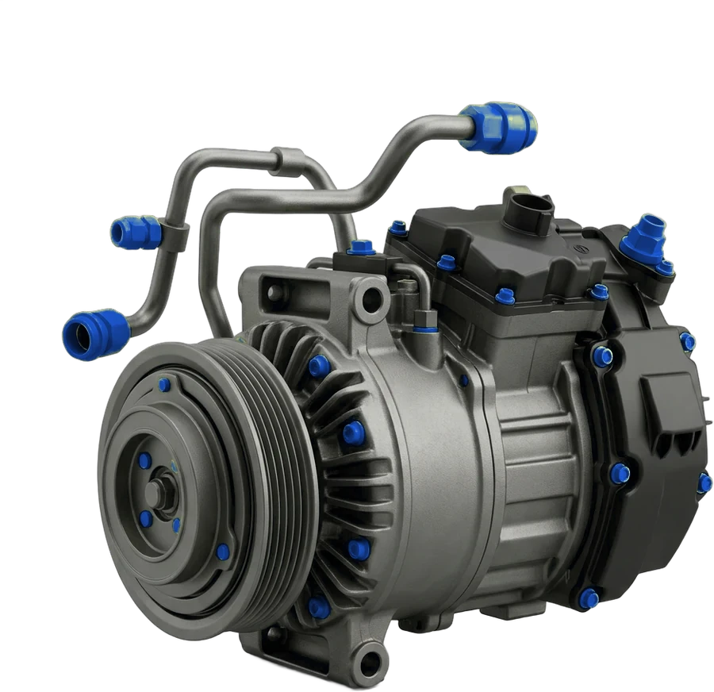
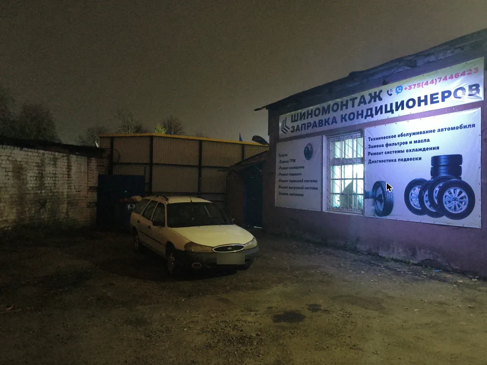
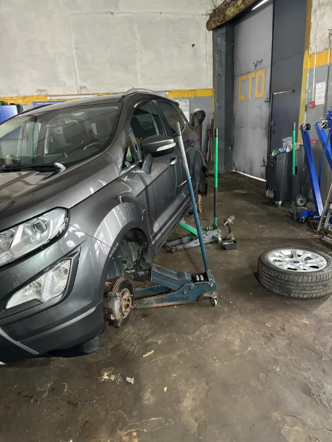
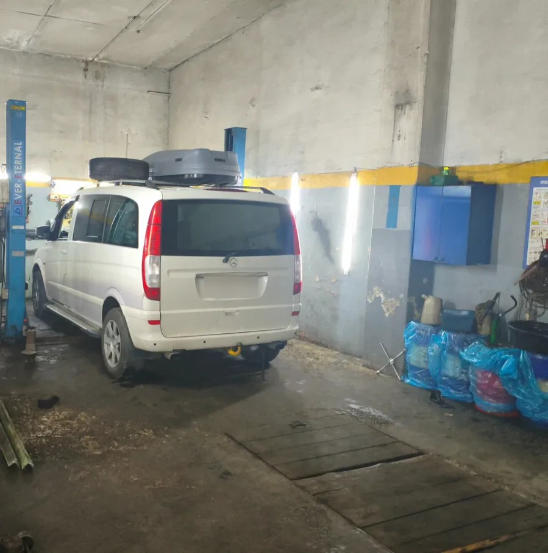
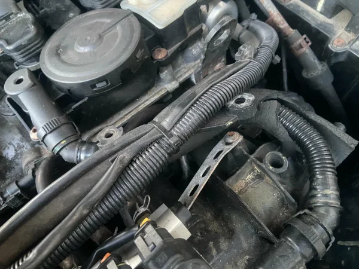
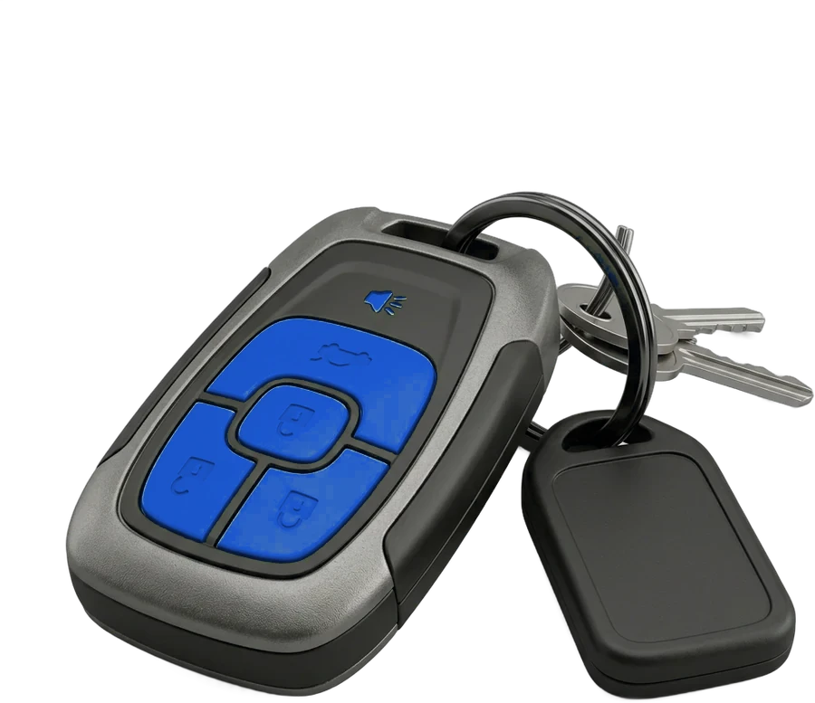

А
Анна М.1 октября
Приезжаю сюда, когда с машиной что-то случается, — всегда помогут. Лишнего не возьмут и сделают на совесть. Сама езжу только сюда и советую знакомым.
Минск, просп. Независимости, 58/12
Ремонт и обслуживание машины, шиномонтаж и заправка кондиционера — рядом с метро Петруся Бровки.

Звоните заранее — назначим удобный день и час
Расплатиться можно как удобно
Иномарки и отечественные машины
Позвоните и расскажите, что с машиной: мастер назовёт цену и предложит время.




Приезжаю сюда, когда с машиной что-то случается, — всегда помогут. Лишнего не возьмут и сделают на совесть. Сама езжу только сюда и советую знакомым.
Был уже дважды и останусь клиентом. Механики подскажут, что скоро потребует замены, и не накручивают. Половина моих коллег теперь обслуживается здесь. Отдельное спасибо директору Андрею.
Зимой поздно вечером, в выходной, сломалась помпа на Kia Rio, а запчасти не было. Пока я ехал, ребята нашли деталь и сразу её поставили.
Позвонил с проблемой — через час уже приняли, а шаровые опоры заменили за 20 минут прямо при мне. Цена за работу справедливая.
Позвонил заранее и приехал в тот же день, без очереди. Объясняют варианты и советуют, как лучше, а не тянут деньги. Можно присутствовать при ремонте и самому посмотреть машину на подъёмнике.
Приветливые, быстрые, общаются по-человечески, а цены отличные. Теперь обслуживаюсь только здесь.
Опишите, что беспокоит в машине
Мастер подберёт удобное время
Просп. Независимости, 58/12
